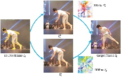
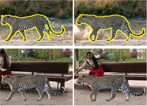
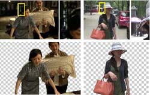
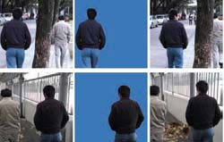
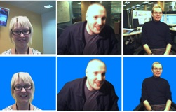
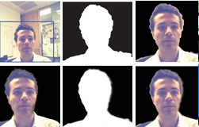

Fan Zhong （钟 凡）
School of Computer Science and Technology
Shandong University
EMail: zhongfan@sdu.edu.cn
About Me
I received my Ph.D degree from State Key Lab. of CAD&CG, Zhejiang University in Dec. 2010, and joined Shandong University in May 2011. My research interests include image and video processing, computer vision, etc.
Selected Papers

Qingnan Fan, Fan Zhong, Dani Lischinski, Daniel Cohen-Or, Baoquan Chen: JumpCut: Non-Successive Mask Transfer and Interpolation for Video Cutout, ACM Transactions on Graphics, 2015, VOL. 34(6). ( In SIGGRAPH Asia' 2015 ) [.PDF, Project]

Fan Zhong, Song Yang, Xueying Qin, Dani Lischinski, Daniel Cohen-Or, Baoquan Chen: Slippage-free Background Replacement for Hand-held Video, ACM Transactions on Graphics, 2014, VOL. 33(6). ( In SIGGRAPH Asia' 2014 ) [.PDF, Project]

Fan Zhong, Xueying Qin, Qunsheng Peng, Xiangxu Meng: Discontinuity-Aware Video Object Cutout, ACM Transactions on Graphics, 2012, VOL. 31(6), pp 175:1-175:10. ( In SIGGRAPH Asia' 2012 ) [.PDF, Project]

Fan Zhong, Xueying Qin, Qunsheng Peng: Robust image segmentation against complex color distribution, The Visual Computer, 2011, VOL. 27, pp 707-716. ( In Computer Graphics International' 2011 ) [.PDF]

Fan Zhong, Xueying Qin, Qunsheng Peng: Transductive Segmentation of Live Video with Non-Stationary Background, In CVPR 2010, pp 2189-2196. (.PDF)

Fan Zhong, Xueying Qin, Jiazhou Chen, Wei Hua, Qunsheng Peng: Confidence-based Color Modeling for Online Video Segmentation, In ACCV 2009, pp 697-706 (.PDF).

钟凡，秦学英，陈佳舟，莫铭臻，彭群生：在线视频分割实时后处理，计算机学报，2009，VOL. 32 (2)，pp 261-267。(.PDF).
Updated on 20, Nov. 2012